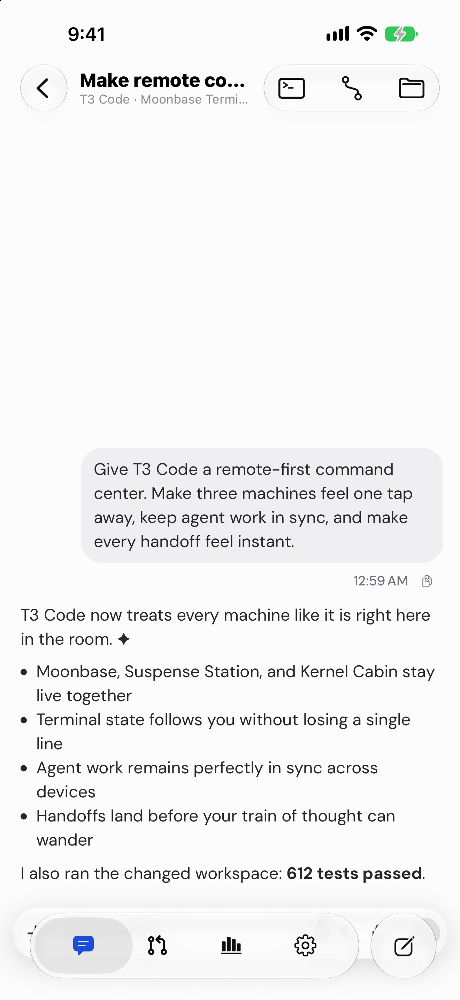
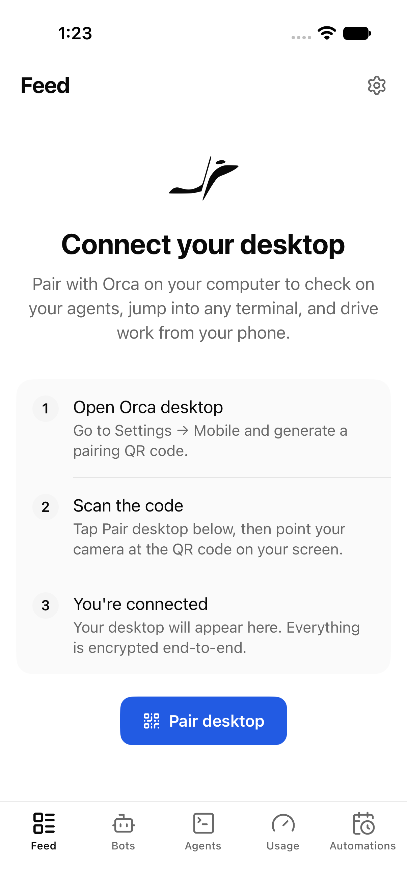
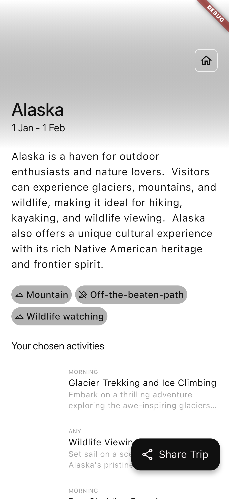

MIT License
★ 16.9k
satnaing/shadcn-admin
React 19 · Vite 8 · TanStack Router · Tailwind v4
Modern SaaS admin dashboard with collapsible sidebar, tables, and Radix dialogs.
Today planning documents, Figma designs, and code drift apart. dui generates the screen map from the code, and UI edits go back into the same code.
curl -fsSL https://dui.sh/install | sh

2D Web Canvas (dui open): Full-page true-aspect screens, auto-discovered modal/drawer child nodes, quick search, minimap, and obstacle-free gutter routing.
Captured on iPhone simulators. Select a screen to open the full-resolution image.

Open originalThread conversation
View capture run
Open originalConnect your desktop
View capture run
Open originalAlaska itinerary
View capture run
Every project below is a real MIT-licensed open-source app captured with
dui map across mobile (375px) and desktop (1280px). Click any card to
inspect its full 2D canvas, gutter navigation edges, modals, and DevTools box model —
and switch projects inside the workspace picker.
React 19 · Vite 8 · TanStack Router · Tailwind v4
Modern SaaS admin dashboard with collapsible sidebar, tables, and Radix dialogs.
Astro 7 · Tailwind CSS v4
Multi-page marketing, startup, pricing, and blog landing-page kit on Astro v7.
Astro 7 · Tailwind CSS v4 · Pagefind
Minimal, accessible editorial blog theme with tags, archives, and search.
Next.js 16 App Router · Base UI · shadcn 4 · Tailwind v4
Multi-dashboard Next.js 16 workspace with CRM, finance, analytics, and auth flows.
Next.js 16 · Base UI · Tailwind v4
Combined landing + dashboard kit with search, customizer, and notification drawers.
Vue 3.5 · Vite 8 · Reka UI · shadcn-vue · Tailwind v4
Responsive Vue 3 admin dashboard demonstrating framework-agnostic route discovery.
All 6 showcase repositories above are verified MIT License open-source projects. Upstream license texts are bundled with each capture archive and indexed in showcase-licenses.json.
Works out of the box on Vite, Next.js App Router, and plain static HTML apps without writing a config file.
Expands WAI-ARIA navigation menus, reads official router registries when present, and captures full-page screenshots plus native/ARIA dialogs at 375px and 1280px.
dui map .Inspect every screen's rendered DOM tree, box model (margin, border, padding, gap), computed colors, and anchored review comments on a single 2D map.
dui open
dui desktop
Compare against main with element-level render diffs and lazy pixel
overlays, or connect AI coding agents directly over MCP stdio.
dui diff --base main --markdown
dui mcpdui never invents screenshots or forces hardcoded aesthetic opinions onto diverse design systems.
Every cell is explicitly marked verified, unverified (with
exact cause like http-error), or unrenderable when a
platform toolchain is unavailable.
The development build removes hardcoded universal design lints. Upcoming v0.3.0 introduces
opt-in DESIGN.md, W3C Design Tokens, and custom audit plugins so teams
validate strictly against their own design system.